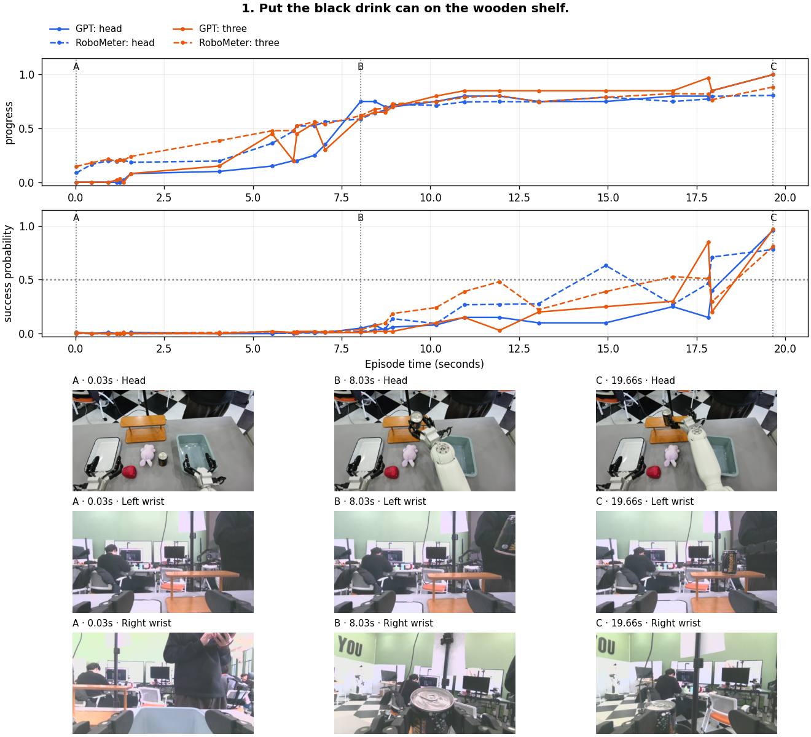
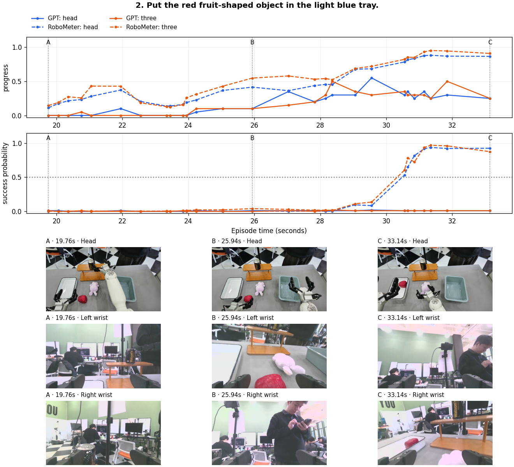
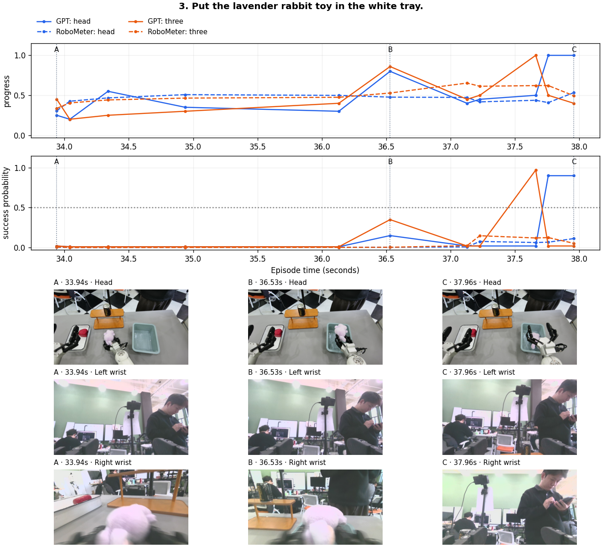

Run coverage: 914/914 camera/time-step judgments. GPT independently scored the same selected histories, without RoboMeter scores. GPT scores and probability estimates are not human ground truth or calibrated probabilities. Agreement does not establish accuracy. Three-camera images use horizontal tiles.
Complete: 128/128 judgments across 64 selected times. Blue: head only; orange: three cameras. Solid: GPT; dashed: RoboMeter. A/B/C match the image columns. Null GPT scores are gaps, not zero.

| Camera input | GPT final progress / success | RoboMeter at same time | GPT final evidence |
|---|---|---|---|
| head · 19.66s | 1.000 / 0.960 | 0.807 / 0.781 | The black drink can is upright on the wooden shelf's upper tier. The gripper has opened and moved to the right, indicating release; the can appears stably supported, though only one post-release snapshot is shown. |
| three · 19.66s | 1.000 / 0.970 | 0.885 / 0.809 | The black drink can stands upright on the wooden shelf's top tier. The gripper has opened and moved away, leaving the can visibly supported by the shelf. |
Source annotation review notes: Task boundary: confirm release and next target in the original head/wrist images.
| Time / camera input | Progress / success | Status and evidence |
|---|---|---|
| 0.03s / head | 0.000 / 0.010 | not_success: The black drink can is upright on the tabletop beside the plush toy, separate from the empty wooden shelf. Neither gripper is holding the can. |
| 0.03s / three | 0.000 / 0.010 | not_success: The black drink can is upright on the tabletop beside the purple toy, in front of the wooden shelf. The shelf is empty, and neither gripper is holding the can. |
| 0.46s / head | 0.000 / 0.000 | not_success: The black drink can remains upright on the tabletop in front of the wooden shelf. Neither gripper is holding it, and the shelf is empty. |
| 0.46s / three | 0.000 / 0.001 | not_success: The black drink can remains upright on the tabletop beside the plush toy, in front of the empty wooden shelf. Neither gripper is holding or contacting the can; no placement is visible. |
| 0.93s / head | 0.000 / 0.010 | not_success: The black drink can remains visibly on the tabletop in front of the wooden shelf; it has not been placed on the shelf. |
| 0.93s / three | 0.000 / 0.000 | not_success: The black drink can remains upright on the table beside the purple toy, away from the wooden shelf. Neither gripper holds the can, and the shelf is empty. |
| 1.16s / head | 0.000 / 0.000 | not_success: The black drink can remains upright on the tabletop in front of the wooden shelf. Neither gripper contacts it, and the shelf remains empty. |
| 1.16s / three | 0.020 / 0.000 | not_success: The black can remains upright on the tabletop beside the plush toy, away from the wooden shelf. The right gripper has moved slightly but has not visibly contacted or grasped the can. |
| 1.26s / head | 0.000 / 0.000 | not_success: The black drink can remains upright on the table beside the plush toy, separate from the wooden shelf. Neither gripper has grasped the can, and the shelf is empty. |
| 1.26s / three | 0.030 / 0.000 | not_success: The right gripper has begun repositioning but has not grasped the black can. The can remains upright on the tabletop beside the plush toy, and the wooden shelf is empty. |
| 1.36s / head | 0.020 / 0.000 | not_success: The black can remains upright on the tabletop in front of the empty wooden shelf. The right gripper has moved slightly toward it but remains separated; no grasp or placement is visible. |
| 1.36s / three | 0.000 / 0.010 | not_success: The black drink can is still visibly on the tabletop near the plush toy, while the wooden shelf remains empty; no grasp, transport, or release onto the shelf is shown. |
| 1.56s / head | 0.080 / 0.010 | not_success: The black drink can is still visibly standing on the tabletop near the center, while the wooden shelf remains empty. The robot gripper is nearby but has not visibly grasped or placed the can. |
| 1.56s / three | 0.080 / 0.000 | not_success: The right gripper has moved toward the black can, but the can remains upright on the tabletop beside the plush toy. No grasp or lift is visible, and the wooden shelf is empty. |
| 4.05s / head | 0.100 / 0.000 | not_success: The right gripper has approached the black can, but the can remains upright on the tabletop. No grasp or lift is visible, and the wooden shelf is empty. |
| 4.05s / three | 0.150 / 0.000 | not_success: The right gripper has approached the black drink can, but the can remains upright on the tabletop beside the plush toy. No grasp or lift is visible, and the wooden shelf remains empty. |
| 5.54s / head | 0.150 / 0.000 | not_success: The right gripper has approached and surrounds the black can, but the can remains upright on the tabletop. No lift or placement is visible, and the wooden shelf remains empty. |
| 5.54s / three | 0.450 / 0.020 | not_success: The black drink can is visible in the foreground near the robot, but it is not visibly on the wooden shelf. The shelf remains empty, and stable placement/release is not shown. |
| 6.14s / head | 0.200 / 0.010 | not_success: The right gripper has approached and surrounds the black can, which remains upright at its original tabletop location. A secure grasp is unclear; no lift, transfer, or release onto the empty wooden shelf is visible. |
| 6.14s / three | 0.200 / 0.010 | not_success: The right gripper is positioned around the black drink can, which remains upright at its original tabletop location. No clear lift or transport is visible, and the wooden shelf is empty. |
| 6.24s / head | 0.200 / 0.010 | not_success: The right gripper has reached and partially surrounds the black can, which remains near its original tabletop position. No clear lift is visible, and the wooden shelf is empty; placement and release have not occurred. |
| 6.24s / three | 0.450 / 0.020 | not_success: The black can is visibly being held or approached by the gripper in the foreground, but the wooden shelf remains empty; release and stable placement are not shown. |
| 6.74s / head | 0.250 / 0.010 | not_success: The right gripper surrounds the black drink can and appears to begin lifting it near its original tabletop position. The wooden shelf remains empty; no transport to the shelf, release, or stable placement is visible. |
| 6.74s / three | 0.550 / 0.020 | not_success: The black can is visibly held in the robot gripper in the final view, while the wooden shelf remains in the background. It has not visibly been released or stably placed on the shelf. |
| 7.04s / head | 0.350 / 0.010 | not_success: The right gripper appears to hold and lift the black can above the table. The can remains away from the wooden shelf; no release or placement on the shelf is visible. |
| 7.04s / three | 0.300 / 0.010 | not_success: The right gripper holds the black drink can and has lifted it from the table. The can remains in the gripper in front of the wooden shelf; no placement or release is visible. |
| 8.03s / head | 0.750 / 0.050 | not_success: The black can is visibly grasped and held above/in front of the wooden shelf, but it has not been released or shown resting stably on the shelf. |
| 8.03s / three | 0.600 / 0.010 | not_success: The right gripper has lifted the black drink can and moved it toward the wooden shelf. At the last snapshot it remains held in the gripper; no release or stable placement on the shelf is visible. |
| 8.43s / head | 0.750 / 0.080 | not_success: The black can is visibly grasped and positioned over the wooden shelf, but it remains held by the gripper and has not been visibly released or shown stably placed. |
| 8.43s / three | 0.650 / 0.020 | not_success: The robot has grasped and lifted the black can toward the wooden shelf. At the last snapshot the can remains held in the gripper above the shelf area; no release or stable placement is visible. |
| 8.73s / head | 0.700 / 0.030 | not_success: The robot has lifted the black drink can and moved it near the wooden shelf. The gripper still holds the can; release and stable placement on the shelf are not visible. |
| 8.73s / three | 0.650 / 0.020 | not_success: The robot has lifted the black drink can and moved it toward the wooden shelf. At the last snapshot the can remains held in the right gripper above the shelf; release and stable placement are not visible. |
| 8.93s / head | 0.700 / 0.060 | not_success: The robot has lifted the black drink can and moved it to the wooden shelf area. At the last snapshot, the gripper still encloses the can; shelf contact is partly obscured, and release or stable placement is not visible. |
| 8.93s / three | 0.700 / 0.020 | not_success: The right gripper has lifted the black drink can and moved it over the wooden shelf. At the last snapshot the can remains held above the shelf; no release or stable placement is visible. |
| 10.16s / head | 0.750 / 0.080 | not_success: The robot has lifted the black can and moved it to the wooden shelf. At the last snapshot the gripper still surrounds the can; its base is obscured, so release and stable placement are not visible. |
| 10.16s / three | 0.800 / 0.100 | not_success: The black can is visibly held by the gripper above the wooden shelf, but it has not been released or shown stably resting on the shelf. |
| 10.96s / head | 0.800 / 0.150 | not_success: The robot has lifted the black drink can and moved it to the wooden shelf. At the last snapshot, the gripper still surrounds the can, obscuring its base; release and stable placement are not visible. |
| 10.96s / three | 0.850 / 0.150 | not_success: The robot has lifted the black drink can and positioned it upright at the wooden shelf's top surface. The gripper still appears to hold the can; release and stable unsupported placement are not visible. |
| 11.95s / head | 0.800 / 0.150 | not_success: The robot has lifted the black can and positioned it upright at the wooden shelf. The gripper still surrounds the can, obscuring its base; release and stable placement are not visibly established. |
| 11.95s / three | 0.850 / 0.030 | not_success: The black can is visibly still held by the gripper near/over the wooden shelf; no release or stable placement on the shelf is visible. |
| 13.05s / head | 0.750 / 0.100 | not_success: The black can is visibly held by the gripper above the wooden shelf, but it has not been released or shown stably resting on the shelf. |
| 13.05s / three | 0.850 / 0.200 | not_success: The black drink can has been moved upright onto the wooden shelf's upper surface, but the gripper remains around it. Release and stable unsupported placement are not visibly confirmed. |
| 14.94s / head | 0.750 / 0.100 | not_success: The black can is visibly held by the gripper above the wooden shelf, but the gripper remains closed and the can is not visibly released or stably placed on the shelf. |
| 14.94s / three | 0.850 / 0.250 | not_success: The black can has been moved onto the wooden shelf and appears upright with its base on the top surface. The gripper still surrounds the can; release and stable unsupported placement are not visibly confirmed. |
| 16.83s / head | 0.800 / 0.250 | not_success: The robot lifted the black can and moved it to the wooden shelf. At the final snapshot, the gripper still surrounds the can and obscures its base; release and stable placement are not confirmed. |
| 16.83s / three | 0.850 / 0.300 | not_success: The black drink can is upright on the wooden shelf's upper surface, but the right gripper still surrounds it. Release and stable unsupported placement are not visibly confirmed. |
| 17.83s / head | 0.800 / 0.150 | not_success: The black can is visibly being held by the gripper above the wooden shelf, but the gripper has not released it and stable placement on the shelf is not shown. |
| 17.83s / three | 0.970 / 0.850 | success: The black drink can is upright on the wooden shelf's upper tier. The gripper appears open around it, suggesting release, though it remains close and no later withdrawn view confirms stability. |
| 17.93s / head | 0.850 / 0.400 | not_success: The black can has been lifted and positioned upright at the wooden shelf's upper surface. The gripper still surrounds the can, obscuring its base; release and stable unsupported placement are not clearly visible. |
| 17.93s / three | 0.850 / 0.200 | not_success: The black can is positioned over/on the wooden shelf, but it remains visibly held by the gripper; release and stable placement are not confirmed. |
| 19.66s / head | 1.000 / 0.960 | success: The black drink can is upright on the wooden shelf's upper tier. The gripper has opened and moved to the right, indicating release; the can appears stably supported, though only one post-release snapshot is shown. |
| 19.66s / three | 1.000 / 0.970 | success: The black drink can stands upright on the wooden shelf's top tier. The gripper has opened and moved away, leaving the can visibly supported by the shelf. |

| Camera input | GPT final progress / success | RoboMeter at same time | GPT final evidence |
|---|---|---|---|
| head · 33.14s | 0.250 / 0.010 | 0.866 / 0.926 | The red fruit-shaped object has been released into the white tray on the left. The intended light blue tray on the right remains visibly empty. |
| three · 33.14s | 0.250 / 0.010 | 0.909 / 0.875 | The red fruit-shaped object has been released into the white tray on the left. The intended light blue tray on the right is visibly empty, so placement was in the wrong destination. |
Source annotation review notes: Task boundary: confirm release and next target in the original head/wrist images.; The red fruit is in the white tray, contrary to the configured fruit-to-blue rule. Corrective transfer remains unfinished.
| Time / camera input | Progress / success | Status and evidence |
|---|---|---|
| 19.76s / head | 0.000 / 0.010 | not_success: The red fruit-shaped object is on the tabletop to the left of the light blue tray, not inside it. The robot arm partially obscures the tray, but the target object is clearly visible outside. |
| 19.76s / three | 0.000 / 0.010 | not_success: The red fruit-shaped object is visibly resting on the tabletop, outside the light blue tray. The robot arm partially occludes the tray, but the target object remains clearly outside it. |
| 20.06s / head | 0.000 / 0.010 | not_success: The red fruit-shaped object remains on the tabletop beside the white tray, outside the light blue tray. No grasp or placement is visible; the robot arm partially occludes the blue tray. |
| 20.06s / three | 0.000 / 0.000 | not_success: The red fruit-shaped object remains on the tabletop to the left of the light blue tray. It is not grasped or placed in the tray, which is partly occluded by the robot arm. |
| 20.35s / head | 0.000 / 0.000 | not_success: The red fruit-shaped object remains on the tabletop to the left of the light blue tray, ungrasped. The robot arm partially obscures the tray, but the target object is clearly outside it. |
| 20.35s / three | 0.000 / 0.000 | not_success: At the last time step, the red fruit-shaped object remains on the tabletop to the left of the light blue tray. It is not grasped or placed in the tray; the robot arm partially obscures the tray. |
| 20.75s / head | 0.000 / 0.000 | not_success: The red fruit-shaped object remains on the tabletop to the left of the light blue tray. Neither gripper holds it; the robot arm partly obscures the tray, but the target object is clearly outside it. |
| 20.75s / three | 0.050 / 0.010 | not_success: The red fruit-shaped object is still visibly on the tabletop to the left of the light blue tray, while the tray appears empty. The robot gripper is near/over the tray, but no grasp or placement is visible. |
| 21.05s / head | 0.000 / 0.000 | not_success: The red fruit-shaped object remains on the tabletop to the left of the light blue tray. No grasp or transfer is visible; the robot arm partially obscures the tray. |
| 21.05s / three | 0.000 / 0.000 | not_success: The red fruit-shaped object remains on the tabletop to the left of the light blue tray. No grasp or transfer is visible; the robot arm partially occludes the tray. |
| 21.95s / head | 0.100 / 0.010 | not_success: The red fruit-shaped object is still visibly on the table at lower left, while the light blue tray is empty. The robot gripper is positioned above/near the tray but no grasp or placement is visible. |
| 21.95s / three | 0.000 / 0.000 | not_success: The red fruit-shaped object remains on the tabletop to the left of the light blue tray throughout the snapshots. No grasp or transfer is visible; the robot arm partially obscures the tray, but the target object is clearly outside it at the last time step. |
| 22.55s / head | 0.000 / 0.000 | not_success: At the last time step, the red fruit-shaped object remains on the tabletop to the left of the light blue tray. The tray is visibly empty; no grasp or placement of the fruit is shown. |
| 22.55s / three | 0.000 / 0.000 | not_success: The red fruit-shaped object remains on the tabletop to the left of the light blue tray. The tray is visibly empty at the last time step, and neither gripper holds the fruit. |
| 23.34s / head | 0.000 / 0.000 | not_success: At the last snapshot, the red fruit-shaped object remains on the tabletop to the left of the light blue tray. The tray is visibly empty, and neither gripper holds the object. |
| 23.34s / three | 0.000 / 0.000 | not_success: The red fruit-shaped object remains on the tabletop outside the light blue tray, which is visibly empty in the final view; no placement or release is shown. |
| 23.44s / head | 0.000 / 0.000 | not_success: The red fruit-shaped object remains on the tabletop to the left of the light blue tray. The tray is visibly empty, and neither gripper holds the object. |
| 23.44s / three | 0.000 / 0.000 | not_success: At the last timestep, the red fruit-shaped object remains on the tabletop to the left of the light blue tray. The tray is visibly empty, and neither gripper holds the object. |
| 23.84s / head | 0.000 / 0.000 | not_success: The red fruit-shaped object remains on the tabletop to the left of the light blue tray. The tray is empty, and neither gripper holds the object. |
| 23.84s / three | 0.000 / 0.010 | not_success: The red fruit-shaped object is still visibly on the tabletop to the left of the light blue tray, while the tray appears empty; the gripper is near the tray but is not holding the fruit. |
| 23.94s / head | 0.000 / 0.000 | not_success: At the last time step, the red fruit-shaped object remains on the tabletop to the left of the light blue tray. The tray is empty, and neither gripper holds the object. |
| 23.94s / three | 0.000 / 0.000 | not_success: The red fruit-shaped object is still visibly on the tabletop to the left of the light blue tray; it has not been placed inside the tray. The open gripper is near the tray, but no grasp or release is visible. |
| 24.24s / head | 0.050 / 0.010 | not_success: At the last snapshot, the red fruit-shaped object remains on the tabletop beside the approaching left gripper. The light blue tray is empty; no grasp, transfer, or placement is visible. |
| 24.24s / three | 0.100 / 0.000 | not_success: At the last snapshot, the left gripper is approaching the red fruit-shaped object, which remains on the tabletop outside the light blue tray. The tray is empty; no grasp, transfer, or placement is visible. |
| 25.04s / head | 0.100 / 0.000 | not_success: The left gripper is approaching the red fruit-shaped object, which remains on the tabletop outside the light blue tray. No grasp or transfer is visible, and the tray is empty. |
| 25.04s / three | 0.100 / 0.000 | not_success: The left gripper has approached the red fruit-shaped object, which remains on the tabletop outside the light blue tray. No lift or secure grasp is visible, and the tray remains empty. |
| 25.94s / head | 0.100 / 0.010 | not_success: The red fruit-shaped object remains on the tabletop beside the gripper, while the light blue tray is visibly empty. The gripper appears positioned near the object but has not visibly placed or released it in the tray. |
| 25.94s / three | 0.100 / 0.000 | not_success: The left gripper has approached the red fruit-shaped object, which remains on the tabletop outside the light blue tray. No lift or placement is visible; the tray is empty. |
| 27.03s / head | 0.350 / 0.010 | not_success: The red fruit-shaped object is still visible beside the robot gripper on the tabletop, while the light blue tray remains empty. The gripper appears to be approaching or contacting the fruit, but no lift or placement is visible. |
| 27.03s / three | 0.150 / 0.010 | not_success: The left gripper has approached the red fruit-shaped object, which remains on the tabletop outside the light blue tray. No secure grasp or lift is visible, and the tray is empty. |
| 27.83s / head | 0.200 / 0.010 | not_success: The left gripper surrounds the red fruit-shaped object near the tabletop, but a secure lift is unclear. The light blue tray remains empty; no transfer or release into it is visible. |
| 27.83s / three | 0.200 / 0.001 | not_success: The left gripper is positioned around the red fruit-shaped object near the tabletop, but a secure lift is not visible. The light blue tray remains empty; no transport or release into it is shown. |
| 28.16s / head | 0.250 / 0.010 | not_success: The left gripper appears to hold and slightly lift the red fruit-shaped object, but it remains outside the light blue tray. The tray is empty; no release or placement is visible. |
| 28.16s / three | 0.300 / 0.010 | not_success: The left gripper has closed around the red fruit-shaped object near its original position, apparently beginning to lift it. The light blue tray remains empty; no transport into the tray or release is visible. |
| 28.36s / head | 0.300 / 0.010 | not_success: The left gripper appears to have grasped and lifted the red fruit-shaped object, but it remains well left of the light blue tray. The tray is empty; no release or placement is visible. |
| 28.36s / three | 0.500 / 0.020 | not_success: The red fruit-shaped object is visibly grasped by the robot near the lower-left of the workspace, while the light blue tray remains empty; placement and release have not occurred. |
| 29.06s / head | 0.300 / 0.010 | not_success: The left gripper has lifted the red fruit-shaped object above the white tray on the left. The light blue tray on the right remains empty; no placement or release into it is visible. |
| 29.06s / three | 0.350 / 0.010 | not_success: The left gripper has lifted and holds the red fruit-shaped object above the white tray area. The light blue tray remains empty; no release or placement into it is visible. |
| 29.56s / head | 0.550 / 0.020 | not_success: The red fruit-shaped object is visibly grasped above the white tray, while the light blue tray remains empty. It has not been released into the required destination. |
| 29.56s / three | 0.300 / 0.010 | not_success: The left gripper holds the red fruit-shaped object above the white tray on the left. The light blue tray on the right remains empty; no release or placement in the requested tray is visible. |
| 30.55s / head | 0.300 / 0.010 | not_success: The left gripper has lifted the red fruit-shaped object and holds it above the white tray on the left. The light blue tray on the right remains empty; no release or placement in it is visible. |
| 30.55s / three | 0.350 / 0.010 | not_success: The left gripper holds the lifted red fruit-shaped object above the white tray, away from the light blue tray on the right. The blue tray remains empty; no release or placement there is visible. |
| 30.65s / head | 0.350 / 0.010 | not_success: The red fruit is visibly grasped above the white tray on the left, while the light blue tray on the right remains empty; placement in the instructed tray has not occurred. |
| 30.65s / three | 0.300 / 0.010 | not_success: The red fruit-shaped object has been lifted and remains between the left gripper fingers over the white tray. The light blue tray on the right is empty; no release or placement there is visible. |
| 30.85s / head | 0.250 / 0.010 | not_success: The robot picked up the red fruit-shaped object but moved it over the white tray on the left. At the last frame it remains partly obscured by the left gripper there; the light blue tray on the right is empty. Release is unclear. |
| 30.85s / three | 0.300 / 0.010 | not_success: The robot grasped and lifted the red fruit-shaped object, but at the last snapshot it is over or touching the white tray on the left. The light blue tray on the right remains empty. Release is not clearly visible. |
| 31.15s / head | 0.350 / 0.010 | not_success: The red fruit-shaped object is visibly held over/in the white tray on the left, while the light blue tray on the right is empty; release into the correct destination is not shown. |
| 31.15s / three | 0.300 / 0.010 | not_success: The red fruit-shaped object appears released in the white, dark-rimmed tray on the left as the gripper withdraws. The instructed light blue tray on the right remains empty; placement was in the wrong destination. |
| 31.35s / head | 0.250 / 0.010 | not_success: The red fruit-shaped object has been released into the white tray on the left. The instructed light blue tray on the right remains empty; the object is visibly in the wrong destination. |
| 31.35s / three | 0.250 / 0.010 | not_success: The red fruit-shaped object was grasped and moved, but at the last step it is released in the white tray on the left. The intended light blue tray on the right remains empty. |
| 31.85s / head | 0.300 / 0.010 | not_success: The red fruit-shaped object has been released into the white tray on the left. The requested light blue tray on the right remains visibly empty. |
| 31.85s / three | 0.500 / 0.010 | not_success: The red fruit-shaped object is visibly resting in the white tray on the left, while the light blue tray on the right appears empty. The object was moved but not placed in the instructed destination. |
| 33.14s / head | 0.250 / 0.010 | not_success: The red fruit-shaped object has been released into the white tray on the left. The intended light blue tray on the right remains visibly empty. |
| 33.14s / three | 0.250 / 0.010 | not_success: The red fruit-shaped object has been released into the white tray on the left. The intended light blue tray on the right is visibly empty, so placement was in the wrong destination. |

| Camera input | GPT final progress / success | RoboMeter at same time | GPT final evidence |
|---|---|---|---|
| head · 37.96s | 1.000 / 0.900 | 0.534 / 0.113 | The lavender rabbit is visibly inside the white/light tray at the final time step, with the gripper open and no longer holding it; it appears stably placed despite partial occlusion by the gripper. |
| three · 37.96s | 0.400 / 0.020 | 0.494 / 0.053 | The lavender rabbit appears released and resting in the blue-gray bin on the right, with the gripper open above it. The white tray on the left contains a red object, not the rabbit, so the destination is incorrect. |
Source annotation review notes: Task boundary: confirm release and next target in the original head/wrist images.; The red fruit is in the white tray, contrary to the configured fruit-to-blue rule. Corrective transfer remains unfinished.; The rabbit is in the light blue tray, contrary to the configured toys-to-white rule. Move it to the white tray.
| Time / camera input | Progress / success | Status and evidence |
|---|---|---|
| 33.94s / head | 0.250 / 0.020 | not_success: The lavender rabbit is beside the robot gripper on the tabletop, outside the white tray on the left. The gripper partly obscures contact with the toy; no release or placement in the tray is visible. |
| 33.94s / three | 0.450 / 0.020 | not_success: The lavender rabbit is visibly being held or handled near the center/right of the table, outside the white tray. No release or stable placement in the tray is visible; the target tray remains separate at the left. |
| 34.04s / head | 0.200 / 0.010 | not_success: The lavender rabbit is between the gripper fingers near the tabletop, outside the white tray on the left. A secure grasp is unclear, and no placement or release into the tray is visible. |
| 34.04s / three | 0.200 / 0.010 | not_success: The lavender rabbit is outside the white tray, next to or partly between the right gripper's fingers. A secure grasp is unclear; no release or placement in the tray is visible. |
| 34.34s / head | 0.550 / 0.010 | not_success: The lavender rabbit is visibly held near the robot gripper at the center, while the white tray on the right remains empty; placement and release have not occurred. |
| 34.34s / three | 0.250 / 0.010 | not_success: The right gripper appears to hold and slightly lift the lavender rabbit beside the white tray. The rabbit remains outside the tray; no release or stable placement is visible. |
| 34.94s / head | 0.350 / 0.010 | not_success: The lavender rabbit is lifted in the robot's gripper near the center of the table. It remains outside the white tray on the left; no release or placement is visible. |
| 34.94s / three | 0.300 / 0.010 | not_success: The right gripper has lifted the lavender rabbit above the table. It remains held outside the white tray on the left; no release or placement in the tray is visible. |
| 36.13s / head | 0.300 / 0.010 | not_success: The lavender rabbit is lifted and still held by the gripper above the pale blue bin on the right. The white tray is on the left; no release or placement in that tray is visible. |
| 36.13s / three | 0.400 / 0.010 | not_success: The lavender rabbit is lifted and still held by the right gripper above the blue-gray bin. The white tray is on the left; no release or stable placement in it is visible. |
| 36.53s / head | 0.800 / 0.150 | not_success: The lavender rabbit is positioned over the white tray and appears partly inside it, but the robotic gripper is still visibly holding it, so release and stable placement are not confirmed. |
| 36.53s / three | 0.860 / 0.350 | not_success: The lavender rabbit is visibly positioned over/inside the white tray, but the gripper is still holding it, so release and stable placement are not confirmed. |
| 37.13s / head | 0.400 / 0.020 | not_success: The lavender rabbit has been moved into the pale blue bin on the right, with the gripper open above it. The requested white tray is on the left and does not contain the rabbit. |
| 37.13s / three | 0.450 / 0.020 | not_success: The lavender rabbit appears released into the blue-green bin on the right, with the gripper open above it. The instructed white tray is on the left and does not contain the rabbit. |
| 37.23s / head | 0.450 / 0.020 | not_success: The lavender rabbit appears released into the blue-gray bin on the right, with the gripper open above it. The white tray on the left still contains only the red object, so the rabbit is in the wrong destination. |
| 37.23s / three | 0.500 / 0.020 | not_success: The lavender rabbit appears released into the blue-gray bin on the right, with the gripper open above it. The instructed white tray is on the left and contains a red object; the rabbit is not in that tray. |
| 37.66s / head | 0.500 / 0.020 | not_success: The lavender rabbit has been released into the blue-green bin on the right and appears to rest inside it as the gripper opens. The instructed white tray is on the left, containing a red object; the rabbit is not in that tray. |
| 37.66s / three | 1.000 / 0.970 | success: The lavender rabbit is visibly inside the white tray in the head-camera view, while the gripper is open/withdrawn and no longer holding it, indicating placement and release. |
| 37.76s / head | 1.000 / 0.900 | success: The lavender rabbit is visibly inside the white tray near its bottom, while the gripper is open and withdrawn, indicating release and placement. Some of the toy is partially occluded by the gripper. |
| 37.76s / three | 0.500 / 0.020 | not_success: The lavender rabbit has been released and appears settled in the blue-gray bin on the right, partly obscured by the open gripper. The instructed white tray is on the left and contains a red object, not the rabbit. |
| 37.96s / head | 1.000 / 0.900 | success: The lavender rabbit is visibly inside the white/light tray at the final time step, with the gripper open and no longer holding it; it appears stably placed despite partial occlusion by the gripper. |
| 37.96s / three | 0.400 / 0.020 | not_success: The lavender rabbit appears released and resting in the blue-gray bin on the right, with the gripper open above it. The white tray on the left contains a red object, not the rabbit, so the destination is incorrect. |